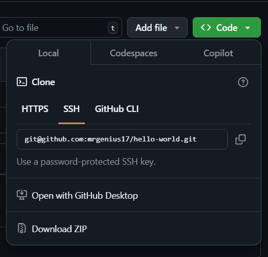

Creating a GitHub Account
GitHub is a web-based platform that uses Git for version control, allowing you to store, manage, and collaborate on code projects. Follow these steps to create an account:
- Go to GitHub: Open your web browser and navigate to GitHub.
- Sign Up: Click on the Sign Up button in the top-right corner.
- Enter Your Details: Provide a username, email address, and password.
- Verify Your Account: Complete the CAPTCHA challenge and click Create account.
- Check Your Email: GitHub will send a verification email. Open it and click the confirmation link.
- Choose a Plan: You can select the free plan or a paid plan with additional features.
- Customize Your Experience (Optional): GitHub may ask questions about your experience level and interests. Answer them or skip this step.
Once completed, you now have a GitHub account and can start creating repositories to manage your code.
Creating Your First Repository
A repository (repo) is where your project files and version history are stored. Follow these steps to create your first repository on GitHub:
-
Log In: Go to GitHub and sign in to your account.
-
Create a New Repository: Click on the + icon in the top-right corner and select New repository.
-
Repository Name: Enter a name for your repository. It should be descriptive of your project.
-
Description (Optional): Provide a brief summary of what your project is about.
-
Choose Visibility:
- Public: Anyone can see your repository.
- Private: Only you and collaborators can access it.
-
Initialize the Repository (Optional): You can check Add a README file to create a default file that describes your project.
-
Choose a Git Ignore (Optional): Select a
.gitignoretemplate to automatically exclude common files that shouldn’t be tracked. -
Choose a License (Optional): Pick a license if you want to specify terms for using and sharing your code.
-
Create Repository: Click the Create repository button.
Your repository is now ready! You can start adding files, cloning it to your local machine, or collaborating with others.
Connect GitHub Account with your Local git with SSH Keys
Start the SSH Agent Service
Windows
In Powershell, start the ssh service:
Start-Service ssh-agent
If that does not work, open Powershell as Administator and run:
Get-Service ssh-agent | Set-Service -StartupType Manual
Start-Service ssh-agent
Get-Service ssh-agent
After successful execution, it should say the service is running.
Linux
In the terminal, check if the ssh service is running:
eval "$(ssh-agent -s)"
Generate SSH Key Pair
Run this command:
ssh-keygen -t ed25519
A password is not required, nor a file location. Keep hitting enter until a key is generated.
This creates a pair of keys:
- Private key:
~\.ssh\id_ed25519 - Public key:
~\.ssh\id_ed25519.pub
Add Private Key to SSH Agent
Run this command to add the private SSH Key to SSH Agent:
Linux
ssh-add ~/.ssh/id_ed25519
Windows
ssh-add "$env:USERPROFILE\.ssh\id_ed25519"
Get the Public Key Content
Print the public key content to the terminal and copy it:
Linux:
cat ~/.ssh/id_ed25519.pub
Windows:
type "$env:USERPROFILE\.ssh\id_ed25519.pub"
Add the Public Key to your GitHub Account
- In the upper-right corner of any page on GitHub, click your profile photo, then click Settings.
- In the "Access" section of the sidebar, click SSH and GPG keys.
- Click New SSH key or Add SSH key.
- In the "Title" field, add a descriptive label for the new key. For example, if you're using a personal laptop, you might call this key "Personal laptop".
- Let the type of key selection be default, i.e. authentication.
- In the "Key" field, paste your public key.
- Click Add SSH key.
- If prompted, confirm access to your account on GitHub.
Test the Connection
Test the connection to github:
ssh -T git@github.com
Successful connection should say:
Hi <username>! You've successfully authenticated, but GitHub does not provide shell access.
Cloning a Repository Locally
To clone a repository locally, follow these steps:
- First, navigate to the directory where you want to clone the repository:
cd /path/to/your/directory - Get the repository URL:
- Go to the GitHub repository page.
- Click on the Code button.
- Under Clone, click on the SSH Tab, and copy the URL.

- Clone the repository by using the git clone command followed by the copied repository URL:
git clone https://github.com/username/repository-name.git - This will create a new folder with the repository name and download all files into it. You can then navigate into the cloned repository:
cd repository-name You can now work with the repository locally.